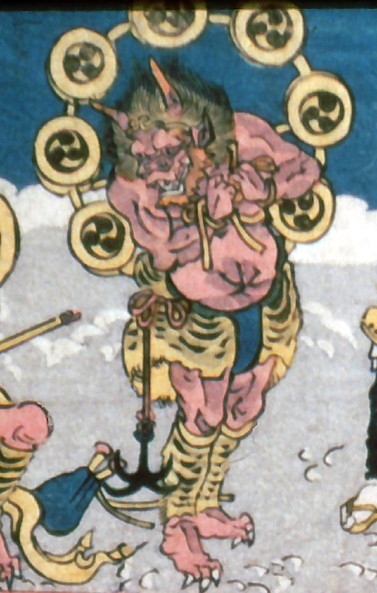

雲の上に立つ雷神。太鼓を背負い、頭に金輪、虎柄の腰巻と脚絆を身につけている。腰には錨をぶら下げている。雷神の肌は赤く2本の角が生え、両手を胸の前に合わせるように握っている。
著作者：歌川貞重／出典：親書誌：A5_pushkin_0033：教訓三界図会；キョウクンサンガイズエ／日付：2011／資源識別子：A5_pushkin_0033_0005_0000
Copyright (c)2010- International Research Center for Japanese Studies, Kyoto, Japan. All rights reserved.